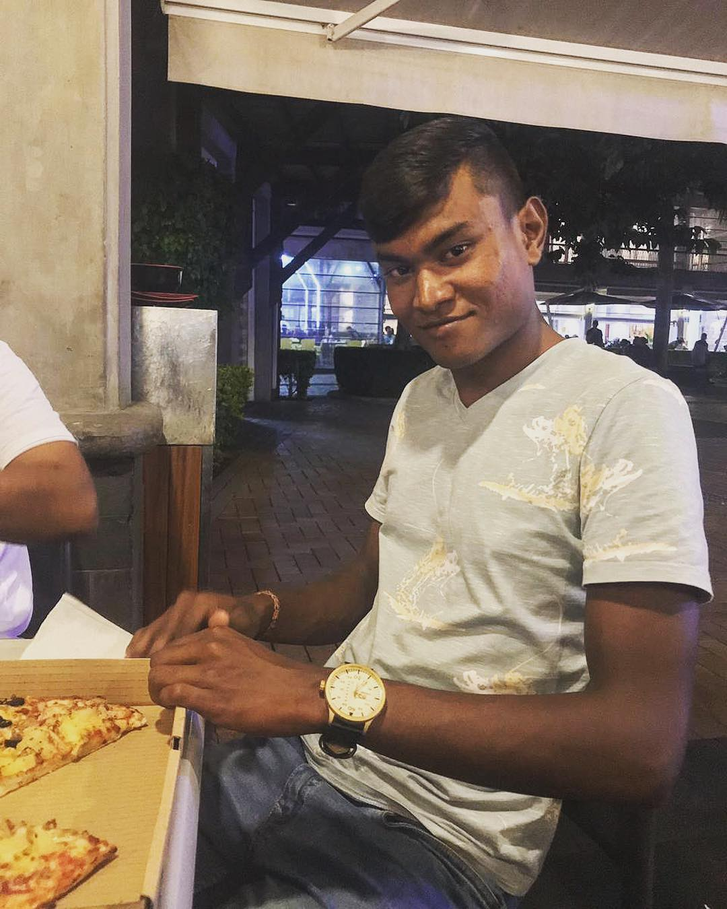

Romesh Ramkorun

Summary
At the age of 25, Romesh Ramkorun is a young talent.
He lives in the coastal village of Old Grand Port.
He is engaged to Miss Anu Seebaruth, Biotechnical Engineer
currently employed by AbioLabs Mauritius.
Education
-
Primary Education
- Year 2004 - Year 2009
- School Attended : Willoughby Government School
- School Address : Royal Road Mahebourg
- Academic Achievements : CPE(grade 24) year 2008
-
Secondary Education
- Year 2010 - Year 2017
- College Attended : Sookdeo Bissoondoyal State College
- School Address : Chapel Lane Rose-Belle
- Academic Achievements :
- Year 2015 - School Certificate grade 21
- Year 2017 - Higher School Certificate grade 6
-
Tertiary Education(BSc Software Engineering)
- Year 2018 - Year 2021
- Institute Attended : University Of Mauritius
- Academic Achievements : Graduated With Honours (Grade 2.2)
Work Experience
-
State Informatics Limited
- Year March 2022 - Year July 2022
- Position Entertained : Trainee Software Engineer
- Experience Gained :
- Got the opportunity to learn about enterprise environments
and also the work culture. Also gained wide knowledge on the Oracle Apex platform.
-
Des-ca Mechanisation ltee
- Year August 2022 - Present days
- Position Entertained : Teamlead, Mechanic, Driver, Admin-officer
- Experience Gained :
-
Got the opportunity to learn directly in the field of action.
Have lots of responsabilities to take care of namely, planning of daily works amoing others.
Skills
- Analytical Skills
- Leadership Skills
- Presentation Skills
- Design Skills
- Communication Skills
- Teamwork Skills
- Creative thinking Skills
- HTML and CSS Skills
Achievements
- Best student CPE
- Best Artist in the singing category at secondary level
- 1st in the junior category at Moka Trail 2020
MY HOBBIES
CONTACT ME